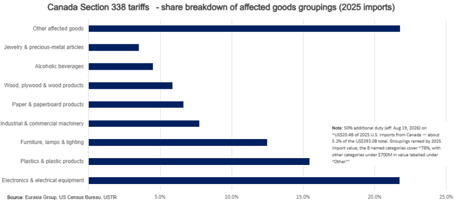
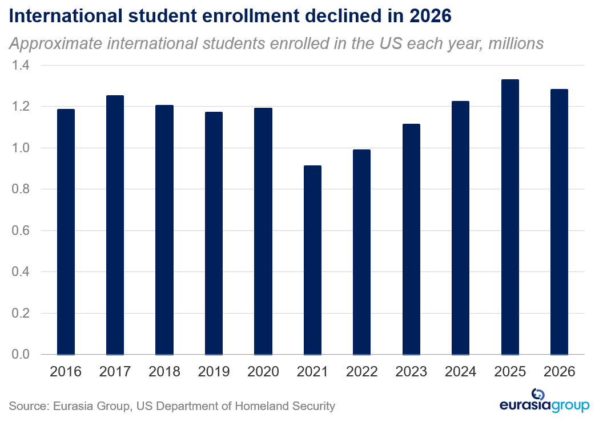

Use of Section 338 is significant expansion of the trade toolkit. The Trump administration imposed 50% Section 338 tariffs on three lists of Canadian goods worth about $20 billion – citing alleged discrimination tied to autos, alcoholic beverages, and dairy – effective in 30 days.
The bigger story is the White House’s revival of Section 338, a long-dormant trade authority that lets the president levy up to 50% duties on imports from countries that discriminate against US commerce. This creates another unilateral trade instrument alongside Sections 232 and 301 and expands US leverage in future trade negotiations. The use of Section 338 in this case strongly indicates the US now views it as a nearly like-for-like replacement for IEEPA trade authority that courts blocked.
The near-term implication is increased trade volatility. Putting Section 338 in the trade toolbox gives the White House an instrument with which it can unliterally threaten tariffs, with minimal process and a relatively short timeline to implementation. The White House will likely use this authority in as expansive a manner as possible, with the legal contours around its use not yet resolved.
The tariffs are meant to increase leverage rather than disrupt trade; they hit even USMCA-compliant goods. The 30-day window to implementation, however, is fixed by statute and provides plenty of time for Trump to back down on the threat of implementation, particularly if Canada offers targeted fixes such as adjustment of the dairy quota allocation or the restoration of US alcohol access.
Key watchpoints are whether Canada re-engages in formal USMCA talks over the next 30 days and whether Section 338 withstands expected legal challenges. Regardless, the move adds a new, potentially replicable tool to the US trade policy toolkit for targeted use against other countries.

South Carolina endorsement is a Trump power play. After President Trump announced she would have his endorsement, Senator Darline Graham (R-SC), who took office last week to replace her brother the late Senator Lindsey Graham, announced she will run for a full term in November.
This is a power-play move by Trump, meant to demonstrate to congressional Republicans the sheer strength of his hold over the party. Graham had no real political experience prior to becoming senator last week; with his endorsement, Trump is showing that not only can he end the careers of non-Trump-aligned figures, but he can create them as well.
Trump’s endorsement powers will be a persistent theme over the remainder of his term; he will continue to use the threat of a primary endorsement as a factor to cajole recalcitrant congressional Republicans into supporting his agenda, and will use primaries to shape the Republican Party into a more MAGA-oriented organization.
DHS student visa rule will be a headwind for foreign students. The Department of Homeland Security last week proposed a major change to the F and J temporary visas; the visas, which are used by most international students in the US, will now come with a fixed end date of the shorter of four years or the program end date, replacing the previous “duration of status” system that allowed students to stay through their program end dates.
Since most PhD programs take significantly longer than four years to complete, visa recipients will now need to apply for a formal extension of stay, and will need to leave the US if the application is denied.
This is by no means a death knell for international PhD students in the US, but on top of a number of other moves by the Trump administration—including funding cuts, high-profile deportations, and what many in universities have characterized as attacks on academic freedom—it will likely diminish, on the margins, the attractiveness of the US as a destination for international students. A potential Democratic administration in 2029 would likely reverse the policy.
This will have two sets of economic effects on the margins: short-term and local, on the economies of colleges and their towns that have in large part become dependent on a steady supply of international students in the last two decades; and longer-term and broader, if it causes top international students that have formed the basis of AI labs like OpenAI and Anthropic to move elsewhere instead.

Quote of the Day
“Diplomacy is not working, and it’s probably time that the American people be advised as to just exactly what the cost is to finish this once and for all.” - Sen. Mike Rounds (R-SD) speaking to Punchbowl News about the Iran war; Defense Secretary Pete Hegseth will give testimony to the Senate Appropriations Committee today to justify the size of the requested defense supplemental. Even lawmakers supportive of the Iran war are expected to ask pointed questions about its cost, but we expect it will likely pass after the August recess.
On the Radar
21 July: Senate Appropriations Committee hearing on Pentagon's supplemental request
21 July: Senate Select Committee on Intelligence votes on Jay Clayton's nomination for Director of National Intelligence
24 July: Section 122 tariffs expire
27 July – 28 August: House on recess
4 August: Michigan primary election
10 August – 11 September: Senate on recess
19 August: Section 338 tariffs on Canada go into effect
3 November: National midterm elections